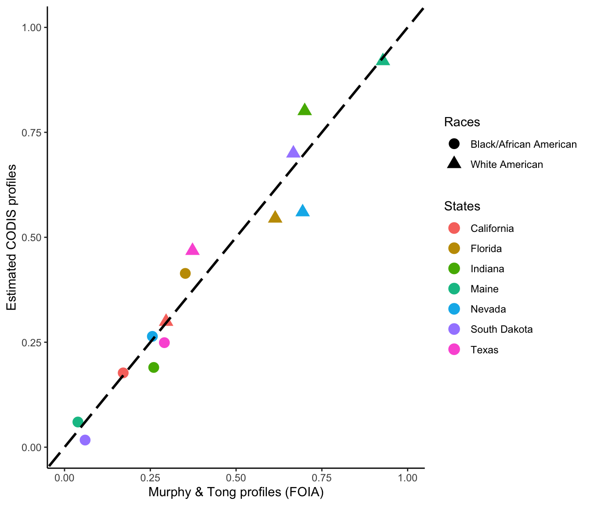
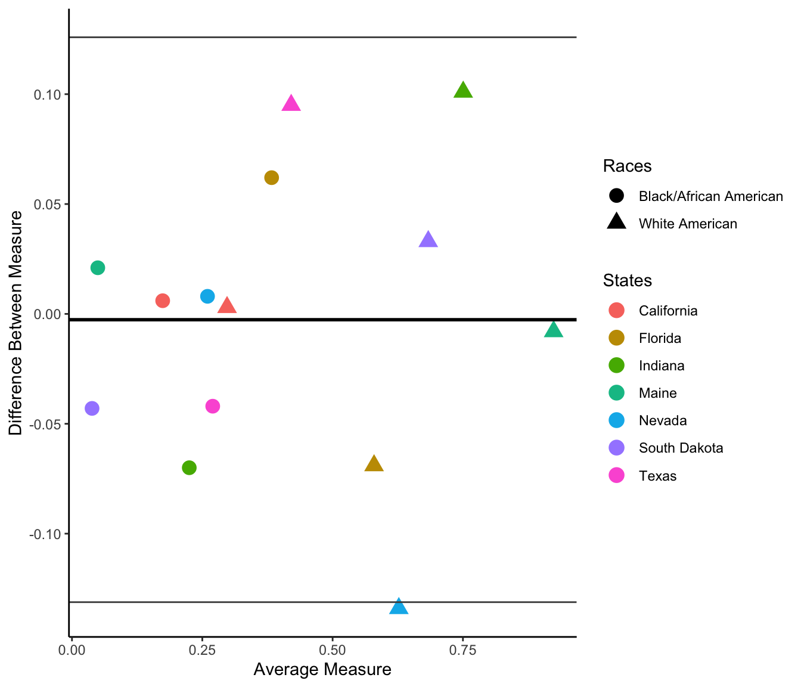
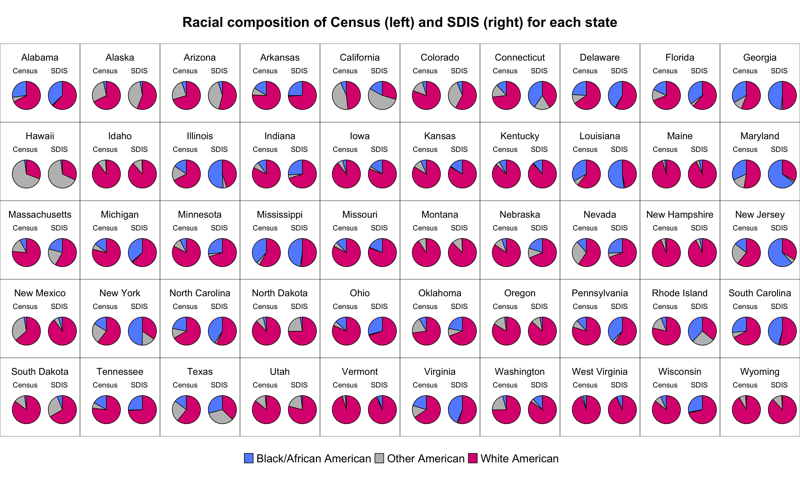

Regression to predict CODIS database sizes and racial proportions
Junhui He
2025-07-04 23:06:16
Last updated: 2025-07-04
Checks: 7 0
Knit directory: PODFRIDGE/
This reproducible R Markdown analysis was created with workflowr (version 1.7.1). The Checks tab describes the reproducibility checks that were applied when the results were created. The Past versions tab lists the development history.
Great! Since the R Markdown file has been committed to the Git repository, you know the exact version of the code that produced these results.
Great job! The global environment was empty. Objects defined in the global environment can affect the analysis in your R Markdown file in unknown ways. For reproduciblity it’s best to always run the code in an empty environment.
The command set.seed(20230302) was run prior to running
the code in the R Markdown file. Setting a seed ensures that any results
that rely on randomness, e.g. subsampling or permutations, are
reproducible.
Great job! Recording the operating system, R version, and package versions is critical for reproducibility.
Nice! There were no cached chunks for this analysis, so you can be confident that you successfully produced the results during this run.
Great job! Using relative paths to the files within your workflowr project makes it easier to run your code on other machines.
Great! You are using Git for version control. Tracking code development and connecting the code version to the results is critical for reproducibility.
The results in this page were generated with repository version 2d5d98e. See the Past versions tab to see a history of the changes made to the R Markdown and HTML files.
Note that you need to be careful to ensure that all relevant files for
the analysis have been committed to Git prior to generating the results
(you can use wflow_publish or
wflow_git_commit). workflowr only checks the R Markdown
file, but you know if there are other scripts or data files that it
depends on. Below is the status of the Git repository when the results
were generated:
Ignored files:
Ignored: .DS_Store
Ignored: .Rhistory
Ignored: .Rproj.user/
Ignored: analysis/.DS_Store
Ignored: code/.DS_Store
Ignored: data/.DS_Store
Ignored: output/.DS_Store
Untracked files:
Untracked: data/Murphy_combined_data.csv
Untracked: data/internal/
Untracked: data/raw/
Untracked: data/regression_data/Murphy_combined_data.csv
Untracked: output/SDIS_racial_composition.csv
Untracked: output/pmf_sibling_counts.csv
Untracked: output/pmf_sibling_counts.png
Unstaged changes:
Modified: analysis/forensic_databases.Rmd
Modified: analysis/racial_proportion.Rmd
Modified: analysis/regression.Rmd
Modified: data/final_CODIS_data.csv
Note that any generated files, e.g. HTML, png, CSS, etc., are not included in this status report because it is ok for generated content to have uncommitted changes.
These are the previous versions of the repository in which changes were
made to the R Markdown (analysis/codis_regression.Rmd) and
HTML (docs/codis_regression.html) files. If you’ve
configured a remote Git repository (see ?wflow_git_remote),
click on the hyperlinks in the table below to view the files as they
were in that past version.
| File | Version | Author | Date | Message |
|---|---|---|---|---|
| Rmd | 2d5d98e | Junhui He | 2025-07-04 | wflow_publish("analysis/codis_regression.Rmd") |
| html | bf233c1 | Junhui He | 2025-06-21 | Build site. |
| Rmd | 289c58a | Junhui He | 2025-06-21 | modify codis regression |
| html | 6dfd60a | Junhui He | 2025-06-18 | Build site. |
| Rmd | 0a2a52a | Junhui He | 2025-06-18 | modify codis regression file |
| html | 3dfd5e1 | Junhui He | 2025-06-17 | Build site. |
| Rmd | 0328266 | Junhui He | 2025-06-17 | recreate a document for regression predictions |
1 Introduction
The Combined DNA Index System (CODIS) is a national database of DNA profiles maintained by the FBI. It includes profiles from convicted offenders, arrestees, and forensic samples collected from crime scenes. CODIS consists of two indexing systems: the State DNA Index System (SDIS) and the National DNA Index System (NDIS). The racial composition of the forensic database has raised concerns, particularly due to the overrepresentation of Black individuals relative to their proportion in the U.S. population.
To analyze the racial demographics of the forensic database at the state level, we require two key pieces of information: (1) the racial breakdown of forensic samples in each state, and (2) the total size of the forensic database in each state. However, since racial composition data is not publicly available for all states, we must estimate the racial proportions using the data that is available.
The available data sources include:
- Direct data on the racial composition in SDIS, from a Freedom of Information Act (FOIA) request conducted by Muprhy and Tong (2020) for the following seven states: California, Florida, Indiana, Maine, Nevada, South Dakota, and Texas. [1]
- The total number and the racial composition of incarecated people in prison at each state. Klein et al. (2023) [2] provided the prison data for each US state except for Michigan state. For the state of Michigan, this data was pulled from a separate source [5].
- The number of people in the State DNA Indexing System (SDIS) and the National DNA Indexing System (NDIS). NDIS data is publicly available for all 50 states [3], whereas SDIS data is only available on a state-by-state basis and is obtained from internet searches.
- The U.S. Census data for each state [4], which provides the total population and the racial composition of the general population. This data is available through the U.S. Census Bureau’s API.
Based on the available data, the total size of the forensic database in each state is determined using the number of individuals in SDIS when such data is available. For states without SDIS data, the number of individuals in NDIS is used instead. To estimate the racial composition of each state’s forensic database, we apply a regression model that incorporates two factors: the racial composition of the general population and the racial composition of the prison population within the state.
The plot below illustrates which data sources are available for each state:
Load Census data from tidycensus
# Load census data for each state from `tidycensus`
# P1_002N is the total population, P1_003N is the total White population, and P1_004N is the total Black population
us_state_density <- get_decennial(
geography = "state",
variables = c(all = "P1_002N", census.num.white = "P1_003N", census.num.black = "P1_004N"),
year = 2020,
geometry = TRUE,
keep_geo_vars = TRUE
)Load NDIS and SDIS data
The NDIS and SDIS are stored in data/raw/NDIS.csv and
data/raw/SDIS.csv, respectively.
# Read NDIS and SDIS data
NDIS = read.csv("./data/raw/NDIS.csv") # National DNA Index System data
SDIS = read.csv("./data/raw/SDIS.csv") # State DNA Indexing System data
SDIS$N_total = ifelse(is.na(SDIS$N_total), SDIS$N_arrestees + SDIS$N_offenders, SDIS$N_total)
# Merge NDIS and SDIS datasets by state
NDIS_SDIS = merge(NDIS, SDIS, by = "State")
# Rename columns to distinguish between NDIS and SDIS data
colnames(NDIS_SDIS) <- gsub('.x','.NDIS', names(NDIS_SDIS))
colnames(NDIS_SDIS) <- gsub('.y','.SDIS', names(NDIS_SDIS))
NDIS_SDIS$N_total.CODIS = ifelse(!is.na(NDIS_SDIS$N_total.SDIS), NDIS_SDIS$N_total.SDIS, NDIS_SDIS$N_total.NDIS)2 Models to predict the racial composition of the forensic database
For states without SDIS racial composition data, we construct a multinomial regression model using stick-breaking techniques to estimate the racial composition of SDIS profiles. In the stick-breaking technique, we divide the US races into three types, black + white + other, and separately estimate the percent of white people in all people \(p_{1}\) and the percent of black people in non-white people \(p_{2}\). Then the racial breakdown is given by \[CODIS\_Prop_{white}=p_1, \quad CODIS\_Prop_{black}=(1-p_1)p_2,\quad CODIS\_Prop_{other}=(1-p_1)(1-p_2).\] We use the following binomial regression models to estimate the racial composition of SDIS profiles: \[P(\text{a person in CODIS is white}) = g(\beta_{10} + \beta_{11}*Census\_Prop_{white}+ \beta_{12}*Prison\_Prop_{white}),\] and \[P(\text{a non-white person in CODIS is black}) = g(\beta_{20} + \beta_{21}*Census\_Prop_{black\mid nonwhite}+ \beta_{22}*Prison\_Prop_{black \mid nonwhite}),\] where \(g(x)=\frac{\exp(x)}{1+\exp(x)}\) is the logit link function. Consequently, the number of the corresponding racial groups in SDIS follows a binomial distribution with the trial number being the total number of people or non-white people in SDIS, and the success probability being the above estimated racial proportions. The independent variables are the racial proportions of population from the census database and the racial proportions of incarcerated people from the prison database.
3 Regression to estimate the racial composition of the SDIS database.
Load regression data
Murphy and Tong processed FOIA data is stored in
data/internal/murphy_processed.csv. The prison and census
combined data is stored in
data/internal/prison_census_combined.csv. The following
code reads the data and preprocesses it to obtain the training and test
data for the regression model. The training data consists of seven
states with FOIA data, and the test data consists of all other
states.
# read and preprocess data
# read data
response_data_path = file.path('./data/internal', 'murphy_processed.csv')
predictor_data_path = file.path('./data/internal', 'prison_census_combined.csv')
response_data = read.csv(response_data_path) # Murphy & Tong data
predictor_data = read.csv(predictor_data_path) # Census and prison data
predictor_data[is.na(predictor_data)] = 0
idx = sapply(response_data$state, function(x) {which(x == predictor_data$State)}) # obtain the index of seven FOIA states
# calculate the response values
mt_data = data.frame(
white = response_data$mt.num.white,
black = response_data$mt.num.black,
total = response_data$mt.num.total,
nonwhite = response_data$mt.num.total - response_data$mt.num.white,
other = response_data$mt.num.other
)
# calculate the predictor values
x = data.frame(
census.percent.white = predictor_data$census.percent.white,
census.percent.black = predictor_data$census.percent.black,
incarc.percent.white = predictor_data$incarcerated_white / (predictor_data$incarcerated_total - predictor_data$incarcerated_unknown),
incarc.percent.black = predictor_data$incarcerated_black / (predictor_data$incarcerated_total - predictor_data$incarcerated_unknown)
)
x$census.percent.black.remain = x$census.percent.black / (1 - x$census.percent.white)
x$incarc.percent.black.remain = x$incarc.percent.black / (1 - x$incarc.percent.white)
# create training data and test data
train_data = x[idx,]
test_data = x[-idx,]Coeffient estimation and Wald test
We estimate the linear coefficients \(\beta\) of the binomial logistic regression
for black Americans and white Americans using glm()
function and do a Wald test on the beta coefficients. The \(p\)-values show that these coefficients are
all statistically significant.
summary(binomial_regression.white)
Call:
glm(formula = cbind(mt_data$white, mt_data$nonwhite) ~ census.percent.white +
incarc.percent.white, family = binomial, data = train_data)
Coefficients:
Estimate Std. Error z value Pr(>|z|)
(Intercept) -2.02116 0.00985 -205.19 <2e-16 ***
census.percent.white 0.41899 0.03027 13.84 <2e-16 ***
incarc.percent.white 4.86338 0.02747 177.05 <2e-16 ***
---
Signif. codes: 0 '***' 0.001 '**' 0.01 '*' 0.05 '.' 0.1 ' ' 1
(Dispersion parameter for binomial family taken to be 1)
Null deviance: 624973 on 6 degrees of freedom
Residual deviance: 100696 on 4 degrees of freedom
AIC: 100792
Number of Fisher Scoring iterations: 4summary(binomial_regression.black)
Call:
glm(formula = cbind(mt_data$black, mt_data$other) ~ census.percent.black.remain +
incarc.percent.black.remain, family = binomial, data = train_data)
Coefficients:
Estimate Std. Error z value Pr(>|z|)
(Intercept) -4.147885 0.008485 -488.85 <2e-16 ***
census.percent.black.remain -1.175214 0.027708 -42.41 <2e-16 ***
incarc.percent.black.remain 9.084829 0.033111 274.38 <2e-16 ***
---
Signif. codes: 0 '***' 0.001 '**' 0.01 '*' 0.05 '.' 0.1 ' ' 1
(Dispersion parameter for binomial family taken to be 1)
Null deviance: 925038 on 6 degrees of freedom
Residual deviance: 44756 on 4 degrees of freedom
AIC: 44843
Number of Fisher Scoring iterations: 4The following plot showing the estimated racial composition using the regression model vs. the true values for the states with available data. We also plot a difference plot (also known as a Bland-Altman plot).


4 Final results
Using the above regression models, we make predictions of the racial composition in SDIS by state and determine the total number of people by SDIS or NDIS. Then the number of people for each racial group in the forensic database is calculated by \(N_{race} = N_{total} * Proportion_{race}\). The plot below shows our estimates for each state, colored by the data source used for each state. The number of Black people in the database are indicated with circles and the number of White people is indicated by triangles.
SDIS racial composition by state
The table below reports the estimates for the racial composition and the number of people for each racial group in SDIS by state, along with the source of the data is below:
final.df = final.data[,c("State","SDIS.black","SDIS.white","SDIS.num.Black","SDIS.num.White","category")]
colnames(final.df) = c("State","SDIS.percent.black","SDIS.percent.white","SDIS.num.black", "SDIS.num.white", "Category")
kable(final.df, caption = "Estimated racial composition of SDIS by state")| State | SDIS.percent.black | SDIS.percent.white | SDIS.num.black | SDIS.num.white | Category |
|---|---|---|---|---|---|
| Alabama | 0.371 | 0.621 | 133560 | 223560 | SDIS+NDIS |
| Alaska | 0.027 | 0.561 | 2137 | 44401 | SDIS+NDIS |
| Arizona | 0.049 | 0.540 | 23514 | 259129 | NDIS only |
| Arkansas | 0.252 | 0.741 | 3080 | 9056 | SDIS+NDIS |
| California | 0.171 | 0.296 | 575484 | 996159 | Murphy and Tong |
| Colorado | 0.062 | 0.580 | 30949 | 289519 | SDIS+NDIS |
| Connecticut | 0.404 | 0.412 | 8080 | 8240 | SDIS+NDIS |
| Delaware | 0.414 | 0.579 | 9399 | 13146 | NDIS only |
| Florida | 0.352 | 0.614 | 603289 | 1052328 | Murphy and Tong |
| Georgia | 0.487 | 0.497 | 169060 | 172531 | SDIS+NDIS |
| Hawaii | 0.018 | 0.320 | 751 | 13345 | NDIS only |
| Idaho | 0.005 | 0.886 | 195 | 34554 | SDIS+NDIS |
| Illinois | 0.509 | 0.451 | 350852 | 310873 | SDIS+NDIS |
| Indiana | 0.260 | 0.700 | 116740 | 314300 | Murphy and Tong |
| Iowa | 0.160 | 0.813 | 24764 | 125834 | NDIS only |
| Kansas | 0.159 | 0.835 | 37754 | 198267 | NDIS only |
| Kentucky | 0.110 | 0.885 | 26520 | 213364 | NDIS only |
| Louisiana | 0.518 | 0.472 | 362402 | 330220 | SDIS+NDIS |
| Maine | 0.039 | 0.928 | 1467 | 34915 | Murphy and Tong |
| Maryland | 0.648 | 0.333 | 95776 | 49218 | SDIS+NDIS |
| Massachusetts | 0.209 | 0.582 | 34313 | 95550 | NDIS only |
| Michigan | 0.366 | 0.626 | 213259 | 364754 | NDIS only |
| Minnesota | 0.267 | 0.702 | 48060 | 126360 | SDIS+NDIS |
| Mississippi | 0.477 | 0.510 | 56286 | 60180 | SDIS+NDIS |
| Missouri | 0.188 | 0.805 | 75200 | 322000 | SDIS+NDIS |
| Montana | 0.005 | 0.877 | 161 | 28313 | SDIS+NDIS |
| Nebraska | 0.200 | 0.688 | 11613 | 39949 | NDIS only |
| Nevada | 0.256 | 0.694 | 62720 | 170030 | Murphy and Tong |
| New Hampshire | 0.032 | 0.923 | 607 | 17518 | NDIS only |
| New Jersey | 0.618 | 0.335 | 20206 | 10953 | SDIS+NDIS |
| New Mexico | 0.046 | 0.900 | 6522 | 127598 | NDIS only |
| New York | 0.499 | 0.347 | 359666 | 250109 | NDIS only |
| North Carolina | 0.411 | 0.567 | 143850 | 198450 | SDIS+NDIS |
| North Dakota | 0.026 | 0.747 | 1323 | 38007 | NDIS only |
| Ohio | 0.291 | 0.700 | 261652 | 629404 | NDIS only |
| Oklahoma | 0.220 | 0.692 | 45274 | 142407 | NDIS only |
| Oregon | 0.029 | 0.867 | 6797 | 203201 | NDIS only |
| Pennsylvania | 0.374 | 0.597 | 177410 | 283192 | NDIS only |
| Rhode Island | 0.380 | 0.358 | 10571 | 9959 | SDIS+NDIS |
| South Carolina | 0.457 | 0.533 | 80262 | 93610 | SDIS+NDIS |
| South Dakota | 0.060 | 0.667 | 3372 | 37485 | Murphy and Tong |
| Tennessee | 0.255 | 0.739 | 132247 | 383256 | SDIS+NDIS |
| Texas | 0.291 | 0.373 | 353163 | 452680 | Murphy and Tong |
| Utah | 0.017 | 0.789 | 2515 | 116722 | NDIS only |
| Vermont | 0.059 | 0.927 | 1324 | 20798 | NDIS only |
| Virginia | 0.439 | 0.550 | 223455 | 279955 | SDIS+NDIS |
| Washington | 0.116 | 0.850 | 31552 | 231200 | SDIS+NDIS |
| West Virginia | 0.068 | 0.929 | 3226 | 44075 | SDIS+NDIS |
| Wisconsin | 0.279 | 0.710 | 109131 | 277717 | NDIS only |
| Wyoming | 0.009 | 0.882 | 293 | 28711 | NDIS only |
write.csv(final.df, file = "./output/SDIS_racial_composition.csv", row.names = FALSE)we generate side-by-side pie charts showing the comparison between the racial composition of the census (left) and the estimated racial composition of SDIS (right) for each state.

Sumary of the SDIS racial composition
Specifically, we report all states where Black individuals make up > 50% of the SDIS database.
black_majority = pis_mt[which(pis_mt$SDIS.black > 0.5), c("State", "SDIS.black", "SDIS.white", "SDIS.other")]
colnames(black_majority) = c("State", "SDIS.percent.black", "SDIS.percent.white", "SDIS.percent.other")
kable(black_majority, caption = "States where Black individuals make up > 50% of the SDIS database")| State | SDIS.percent.black | SDIS.percent.white | SDIS.percent.other | |
|---|---|---|---|---|
| 13 | Illinois | 0.509 | 0.451 | 0.040 |
| 18 | Louisiana | 0.518 | 0.472 | 0.011 |
| 20 | Maryland | 0.648 | 0.333 | 0.019 |
| 30 | New Jersey | 0.618 | 0.335 | 0.047 |
The maximum and minimum SDIS database sizes are shown below:
max_min_SDIS = NDIS_SDIS[c(which.max(NDIS_SDIS$N_total.CODIS),
which.min(NDIS_SDIS$N_total.CODIS)),
c("State","N_total.SDIS","N_total.NDIS","N_total.CODIS")]
kable(max_min_SDIS, caption = "Maximum and minimum SDIS database sizes by state")| State | N_total.SDIS | N_total.NDIS | N_total.CODIS | |
|---|---|---|---|---|
| 5 | California | 3365402 | 3269323 | 3365402 |
| 4 | Arkansas | 12221 | 261289 | 12221 |
Furthermore, we calculate the weighted averages of the racial proportions in Census and SDIS across seven states provided in Murphy and Tong [1] and all states, weighted by the corresponding total number of people in each state. The following table shows the weighted racial proportions in Census and SDIS across states.
| Version | Author | Date |
|---|---|---|
| bf233c1 | Junhui He | 2025-06-21 |
We additionally generate plots showing the difference in the racial proportions between SDIS and Census in each state.


We conclude that Black/African Americans are overrepresented and white Americans are underrepresented in the forensic database compared to Census.
References
[1] Murphy, Erin, and Jun H. Tong. “The racial composition of forensic DNA databases.” Calif. L. Rev. 108 (2020): 1847.
[2] Klein, Brennan, et al. “COVID-19 amplified racial disparities in the US criminal legal system.” Nature 617.7960 (2023): 344-350.
[3] https://le.fbi.gov/science-and-lab/biometrics-and-fingerprints/codis/codis-ndis-statistics
[4] U.S. Census Bureau. “Population.” https://www.census.gov/topics/population.html
[5] https://www.vera.org/downloads/pdfdownloads/state-incarceration-trends-michigan.pdf
sessionInfo()R version 4.3.1 (2023-06-16)
Platform: aarch64-apple-darwin20 (64-bit)
Running under: macOS 15.5
Matrix products: default
BLAS: /Library/Frameworks/R.framework/Versions/4.3-arm64/Resources/lib/libRblas.0.dylib
LAPACK: /Library/Frameworks/R.framework/Versions/4.3-arm64/Resources/lib/libRlapack.dylib; LAPACK version 3.11.0
locale:
[1] en_US.UTF-8/en_US.UTF-8/en_US.UTF-8/C/en_US.UTF-8/en_US.UTF-8
time zone: America/Detroit
tzcode source: internal
attached base packages:
[1] stats graphics grDevices utils datasets methods base
other attached packages:
[1] sf_1.0-21 viridis_0.6.5 viridisLite_0.4.2 cowplot_1.1.3
[5] tidycensus_1.7.1 sandwich_3.1-1 ggpubr_0.6.0 jtools_2.3.0
[9] knitr_1.50 lubridate_1.9.4 forcats_1.0.0 stringr_1.5.1
[13] dplyr_1.1.4 purrr_1.0.4 tidyr_1.3.1 tibble_3.2.1
[17] ggplot2_3.5.2 tidyverse_2.0.0 readr_2.1.5 workflowr_1.7.1
loaded via a namespace (and not attached):
[1] tidyselect_1.2.1 farver_2.1.2 fastmap_1.2.0
[4] promises_1.3.3 digest_0.6.37 timechange_0.3.0
[7] lifecycle_1.0.4 processx_3.8.6 magrittr_2.0.3
[10] compiler_4.3.1 rlang_1.1.6 sass_0.4.10
[13] tools_4.3.1 yaml_2.3.10 ggsignif_0.6.4
[16] labeling_0.4.3 curl_6.2.3 classInt_0.4-11
[19] xml2_1.3.8 RColorBrewer_1.1-3 KernSmooth_2.23-21
[22] abind_1.4-8 withr_3.0.2 grid_4.3.1
[25] git2r_0.36.2 e1071_1.7-16 future_1.40.0
[28] globals_0.17.0 scales_1.4.0 cli_3.6.5
[31] crayon_1.5.3 rmarkdown_2.29 generics_0.1.4
[34] rstudioapi_0.17.1 httr_1.4.7 tzdb_0.5.0
[37] DBI_1.2.3 cachem_1.1.0 proxy_0.4-27
[40] pander_0.6.6 splines_4.3.1 rvest_1.0.4
[43] parallel_4.3.1 tigris_2.2.1 vctrs_0.6.5
[46] jsonlite_2.0.0 carData_3.0-5 car_3.1-3
[49] callr_3.7.6 hms_1.1.3 rstatix_0.7.2
[52] Formula_1.2-5 listenv_0.9.1 jquerylib_0.1.4
[55] units_0.8-7 glue_1.8.0 parallelly_1.45.0
[58] codetools_0.2-19 ps_1.9.1 stringi_1.8.7
[61] gtable_0.3.6 later_1.4.2 broom.mixed_0.2.9.6
[64] furrr_0.3.1 pillar_1.10.2 rappdirs_0.3.3
[67] htmltools_0.5.8.1 R6_2.6.1 rprojroot_2.0.4
[70] evaluate_1.0.3 lattice_0.21-8 backports_1.5.0
[73] broom_1.0.8 httpuv_1.6.16 bslib_0.9.0
[76] class_7.3-22 uuid_1.2-1 Rcpp_1.0.14
[79] gridExtra_2.3 nlme_3.1-162 whisker_0.4.1
[82] xfun_0.52 fs_1.6.6 zoo_1.8-14
[85] getPass_0.2-4 pkgconfig_2.0.3